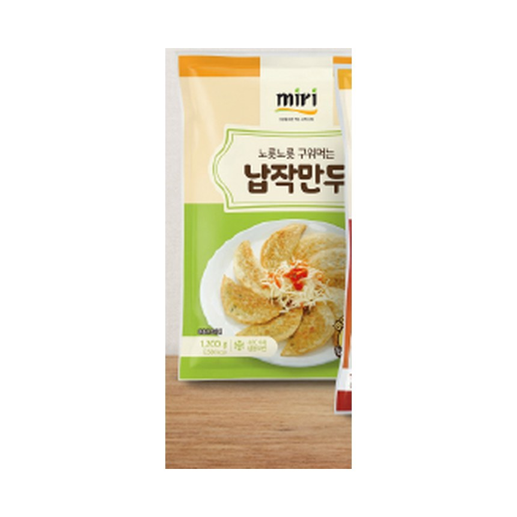

Thin, wide pan-fried Korean flat dumplings with a chewy wrapper. The nostalgic taste of a Korean snack bar (bunsikjeom).
| Product Name | miri Flat Mandu |
|---|---|
| Net Weight | 1,200g / 600g |
| Shelf Life | 24 months frozen |
| Storage | Keep frozen under −18°C |
| HS Code | 1902.20-0000 |
| Main Ingredients | Wheat flour wrapper; vegetable & glass-noodle filling. Contains: Wheat, Soy. |
| Certifications | HACCP · ISO 9001/22000 |
| Private Label / OEM | Available |